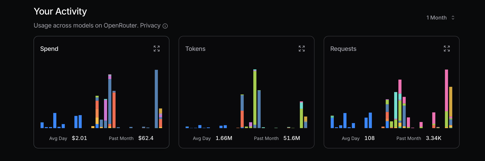

大模型成本、代理及编程工具 | 原创，AI翻译
目录
- 优化LLM API成本
- 优先选用性价比高的模型
- 避免不必要的高端模型调用
- 简单任务首选NLP工具库
- 构建专用代理提升效率
- 通过充分测试比较模型
- DeepSeek与Mistral的API使用
- DeepSeek成本与缓存缺失正相关
- Mistral支出主要来自输出token
- Grok定价更倾向输入token统计
- 任务复杂度影响token消耗
- 实际费用符合文档标价
- 通用代理 vs 垂直领域代理
- 通用代理难以应对复杂场景
- 垂直代理专精特定任务
- 工作流工具灵活性受限
- 自定义Python代理可控性强
- 便利性与功能性的权衡
- 工程师挑剔视角看AI编程工具
- 看重实用价值而非品牌光环
- VSCode+Copilot组合依然可靠
- Claude Code差异对比编辑惊艳
- 语法工具需人工复核
- 实验精神优于盲目跟风
优化LLM API成本
2025.08

来源：openrouter.ai

来源：openrouter.ai
优化token使用时应优先选用经济型模型，若遇问题再考虑升级。Mistral、Gemini Flash和DeepSeek通常更实惠，而Claude Sonnet价格较高。需特别注意Claude Code对路由策略的运用。
近期我曾因忽视该原则产生高额费用——为测算成本极限刻意满负荷调用，这显然非理性行为。比如我真的需要Sonnet 4吗？未必。虽然觉得它是Anthropic的高阶模型且在OpenRouter排名靠前，但我其实分不清Sonnet 4与3.5版本的区别。
Replit创始人Amjad Masad的访谈给我启发：多数任务无需高级模型。理想情况下能完全不用LLM API更好，像中文处理用HanLP等NLP库就能胜任简单任务。
此外可开发定制化专用代理。Claude Code并非所有场景的最佳选择。深入使用不同模型进行对比测试是辨别差异的好方法——用了一段时间Gemini 2.5 Flash后，我发现其能力确实不如Sonnet 4。
后续我改用以下配置参数，其中longContextThreshold尤为关键。使用Claude Code编程时很容易触发长上下文阈值，可定期清理控制台或重启解决。
{
"PROXY_URL": "http://127.0.0.1:7890",
"LOG": true,
"Providers": [
{
"name": "openrouter",
"api_base_url": "https://openrouter.ai/api/v1/chat/completions",
"api_key": "",
"models": [
"moonshotai/kimi-k2",
"anthropic/claude-sonnet-4",
"anthropic/claude-3.5-sonnet",
"anthropic/claude-3.7-sonnet:thinking",
"anthropic/claude-opus-4",
"google/gemini-2.5-flash",
"google/gemini-2.5-pro",
"deepseek/deepseek-chat-v3-0324",
"deepseek/deepseek-chat-v3.1",
"deepseek/deepseek-r1",
"mistralai/mistral-medium-3.1",
"qwen/qwen3-coder",
"openai/gpt-oss-120b",
"openai/gpt-5",
"openai/gpt-5-mini",
"x-ai/grok-3-mini"
],
"transformer": {
"use": [
"openrouter"
]
}
}
],
"Router": {
"default": "openrouter,openai/gpt-5-mini",
"background": "openrouter,google/gemini-2.5-flash",
"think": "openrouter,qwen/qwen3-coder",
"longContext": "openrouter,deepseek/deepseek-chat-v3.1",
"longContextThreshold": 2000,
"webSearch": "openrouter,mistralai/mistral-medium-3.1"
}
}
通用代理 vs 垂直领域代理
2025.08
Manus自称通用AI代理工具，但实际效果恐怕不尽如人意。
其一是运行缓慢，做了大量无效工作；其二是遇到复杂问题或触及能力短板时，任务很容易失败。
垂直代理因其高度专业化而表现卓越。它们针对特定场景设计——比如应对数十种数据库、Spring等上百个Web开发框架，或Vue/React等前端框架。
Dify侧重用AI连接工作流，采用拖拽方式构建AI流程。他们在衔接信息/数据/平台方面需要大量工作。
我也构建过简单代理，比如Python代码重构代理、语法修正代理、bug修复代理和文章合并代理。代码极具灵活性，Dify仅覆盖了创意空间的很小部分。
Manus通过VNC方式展示计算机操作过程来执行任务，但需要上传代码/文本才能运作，并不便捷。Dify则需要像MIT Scratch那样拖拽搭建工作流。
为什么Scratch没有Python流行？因为Python无所不能，而Scratch仅限于教育用途的简单程序。Dify可能面临类似局限。
Manus能处理许多简单任务，但遇到其能力短板时会失败。此外许多服务需要较长的初始化时间，而Manus在这方面效率低下。
作为程序员，我更喜欢用Python结合AI构建垂直代理。这对我来说最简单可控——通过预设提示词和上下文能确保LLM API输出相对稳定。Manus和Dify同样基于这些LLM API构建，其优势在于已集成现成工具链。
若想构建Twitter机器人代理，用Dify可能比自己从头开发更方便。
工程师挑剔视角看AI编程工具
2025.08
最近成功运行Claude Code后，我想分享工具选型历程，期间还整理了些AI工具技巧。
我算是Claude Code的晚期使用者。
Claude Code发布于2025年2月底，但直到最近我才调试成功。部分原因是其需Anthropic API且不支持中国 Visa卡，后来借助Claude Code路由工具才得以使用。
虽听闻诸多赞誉，但我在2025年7月尝试Gemini CLI多次修复代码失败后弃用。也试过Aider这类软件代理。而Cursor在使用半年后停用——其VSCode插件频出故障，况且作为VSCode衍生产品，我不愿给它太多”功劳”，尤其当Copilot插件近期改进明显后我更倾向于原生方案。
不过VSCode基于Electron开源技术，很难归功于特定团队。考虑到众多企业从开源中获利，我只关心预算内最适合的工具。短暂试用Cline后也未采纳。
现在我用OpenRouter定制的Grok 3 beta模型运行VSCode的Copilot插件效果不错。虽然Claude Code未必改变我的习惯，但既然能运行成功，我会在未来几周继续体验。
作为有十年经验的挑剔开发者，我只看重日常实用性而非品牌。Claude Code修正本文语法时表现良好，但令人沮丧的是即使要求最小修改，它仍会列出大量语法建议需人工复核——这违背了自动化初衷。折中方案是让其处理整篇文章，但这使我无法看到具体修正点从而错失学习机会。
最惊艳的是Claude Code以类似git diff的对比方式展示修改，大幅提升审阅效率。使用一天修复代码后，我仍维持Copilot+Grok 3的组合因其简单易用。但不得不说，几天体验下来Claude Code令我印象深刻。

来源：自行截图

来源：自行截图

来源：自行截图
DeepSeek与Mistral的API使用
2025.01.25
DeepSeek
单月消耗1500万token约23.5元人民币。
某日使用数据如下：
| 类型 | Token数 |
|---|---|
| 输入(缓存命中) | 946,816 |
| 输入(缓存缺失) | 2,753,752 |
| 输出 | 3,100,977 |
计算方式：
0.94 * 0.1 + 2.75 * 1 + 3.10 * 2 = 11.83
可见任务成本主要取决于缓存缺失的输入token和输出token，结果符合DeepSeek API定价预期。

来源：自行截图
Mistral
其模型定价如下：
| 模型 | 输入(美元/百万token) | 输出(美元/百万token) |
|---|---|---|
mistral-large-2411 |
2 | 6 |
mistral-small-latest |
0.2 | 0.6 |
某日使用数据(mistral-large-2411)：
| 类型 | Token数 | 费用(美元) |
|---|---|---|
| 总量 | 772,284 | 3.44 |
| 输出 | 474,855 | 2.85 |
| 输入 | 297,429 | 0.59 |
对mistral-small-2409模型：总消耗1,022,407 token。假设输入占1/3、输出占2/3，则输入340,802 token(0.07美元)，输出681,605 token(0.41美元)，合计0.48美元。控制台显示0.43美元，基本吻合。
Grok
| 模型 | 输入(美元/百万token) | 输出(美元/百万token) |
|---|---|---|
grok-2-latest |
2 | 10 |